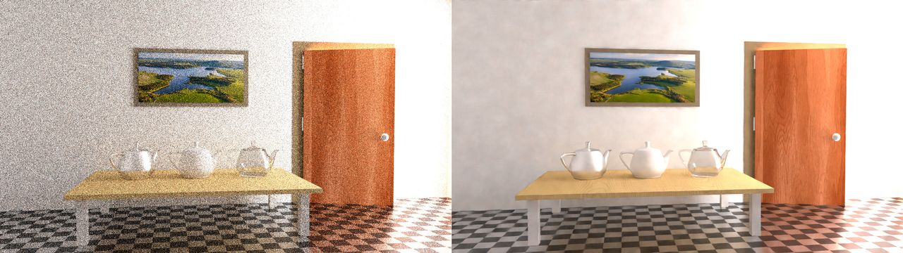
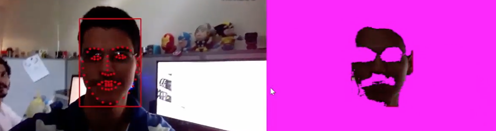
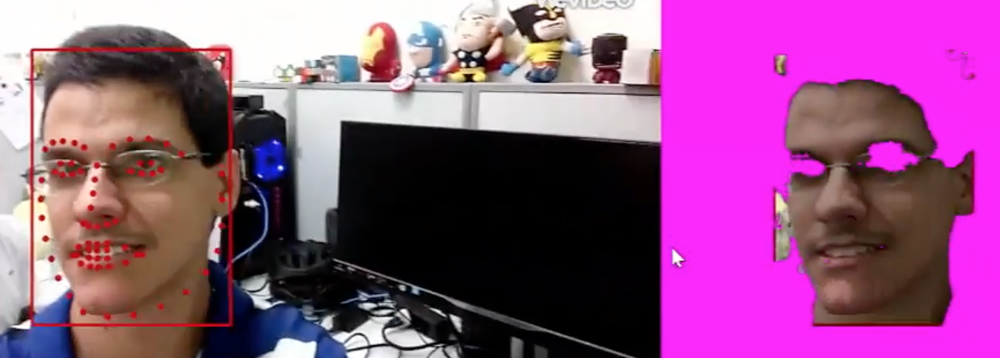
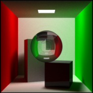

Marcel Santana

Address
Av. Jornalista Anibal Fernandes, s/n
Cidade Universitária (Campus Recife)
ZIP Code: 50740-560
Recife/PE - Brazil
Phone +55 81 3039 8085
Fax +55 81 2126-8438
Contact
e-mail: mss8@cin.ufpe.br
R&D Projects
OKI Brasil
Development of biometric and image quality measurement systems using machine learning and computer vision techniques with Keras, OpenCV, and scikit-learn libraries.
LG Eletronics
Developed a data intensive rendering system to iPad device using C++ and Objective-C.
Simplifique GP
Developed a image enhancement system to Android using Computer Vision and Image Processing techniques, OpenCV, C++, and Android NDK and JNI.
Major Projects
Path Tracer Denoiser
Path tracing can deliver beautiful images. However, it needs thousands of samples per pixel to generate good results. It makes the rendering process take a long time. This delay is prohibitive to real-time applications (such as games) and increases the cost to the movie industry. On the other hand, using low samples per pixel results in a very noisy image. An approach to deal with this tradeoff is rendering a low sampled image and so apply post-processing techniques to get a better result. However, the traditional post-processing techniques are either limited or need a very trick parameters tuning. Thus, the purpose of this project is to build a Convolution Neural Network which delivers a filter able to generate noise-free images from noisy ones. 
Indoor Location System Using FingerPrint and Machine Learning
We compared different algorithms to estimate user's outdoor position using the RSSIs (Received Signal Strength Indicator) collected from different RBS (Radio Base Station) by user's mobile device. The analyzed dataset contains about 2500 lines with 6 different measures from 6 different RBSs. Also, it has 2 columns which represent the user's position (our target).
Project LinkHuman Skin Detection Using Bayesian Approaches
We have prior histograms to classify skin and not skin pixels. The histograms were built from a YCbCr images dataset of manually classified pixels. Those offline histograms are stored in a LUT which provides very fast pixel classification using a Bayesian appraoch. As the user utilizes the application we can update histogram by using the face tracker regions. Hence, the algorithm is able to detect human skin even with changes in environmental light conditions. Our algorithm works well in many different conditions and is very fast, capable of running in many different smartphones.

Video Link
Path Tracer
This project was fully written in C++11 late 2015 to Computer Graphics course. The main features includes: global illumination via unbiased Monte Carlo path tracing, the scene loader (the user can set the camera position, the objects positions and materials, lights etc), the .OBJ loader, anti-aliasing via super-sampling, recursive refraction using Snell's Law, reflectance and transmittance following Fresnel's equations.
Project LinkOther Projects
Ray Trace Scene Viewer
This project implements a basic Ray Tracer algorithm. It was fully written in modern C++11 late 2014 to Graphics Processing course at CIn UFPE. The main feature of this viewer is load and process OBJ files applying texture and Phong lighting mode to each one. The user also can change the position of each object and light in scene. Every Ray Tracing computation is parallel (by using std::threads) it makes the rendering process faster.
keras.io
I have been contribuing on the slack of the keras.io.
Fluid Engine
I have a small contribuition on the open-source project Fluid Engine